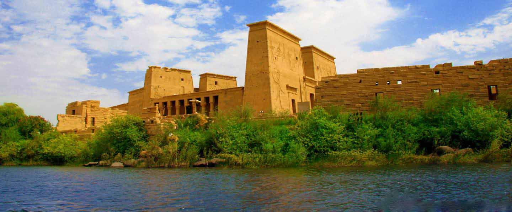

مدينة أسوان
هي عاصمة محافظة
أسوان في مصر. اعتبرت أسوان تاريخيًا إحدى أهم مدن جنوب مصر والبوابة الجنوبية لها،
حيث يقع إلى الجنوب منها الشلال الأول لنهر النيل والذي مَثَّل حدًا طبيعيًا بين صعيد
مصر والنوبة. تقع المدينة على الضفة الشرقية لنهر النيل. يصلها بالقاهرة
خط سكة حديد وطرق برية صحراوية وزراعية ومراكب نيلية ورحلات جوية محلية.
ويبلغ عدد سكانها تقريبا 900 ألف نسمة. وهي واحدة من المدن المبدعة
المسجلة في قائمة اليونسكو في مجال الحرف والفنون

التسمية
كانت أسوان تعرف باسم «سونو» في عصور المصريين
القدماء ومعناها السوق حيث كانت مركزا تجاريا للقوافل القادمة من وإلى النوبة.
ثم أطلق عليها في العصر البطلمي اسم «سين» وسماها النوبيون «يبا سوان».
وعرفت أيضا باسم بلاد الذهب لأنها كانت بمثابة كنز كبير أو مقبرة لملوك النوبة الذين عاشوا فيها
آلاف السنين. وكانت حدود أسوان تمتد قديما قبل الهجرة من أسنا شرقا إلى حدود
السودان جنوبا وكان سكانها من النوبين ولكن بعد الفتح الإسلامي لبلاد النوبة سكن فيها بعض قبائل العرب.